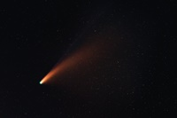
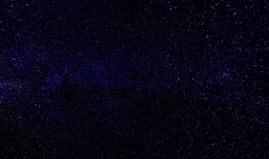
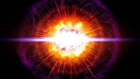
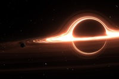
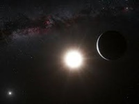
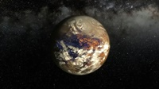

Sobre
Astronomia é uma ciência natural que estuda corpos celestes e fenômenos que se originam fora da atmosfera da Terra. Preocupada com a evolução, a física, a química e o movimento de objetos celestes, bem como a formação e o desenvolvimento do universo. A astronomia é uma das mais antigas ciências

Cometa halley
Cometa Halley, oficialmente designado 1P/Halley, é um cometa periódico, visível na Terra a cada 75–76 anos. O Halley é o único cometa de curto período que é regularmente visível a olho nu da Terra, e o único cometa a olho nu a aparecer nos céus duas vezes durante uma só geração humana.saiba mais

Sons do Cosmos
Diferentemente do que filmes como Star Wars sugerem, as batalhas entre naves espaciais não geram estrondosos sons de explosões. Aliás, não geram som nenhum porque o espaço é completamente silencioso.Essa é a realidade porque as ondas sonoras precisam de meios para se propagar. Como não há atmosfera no vácuo, o espaço é completamente silencioso. Por isso a ideia de se perder no espaço é tão aterrorizante, já que literalmente ninguém ouviria você gritar.saiba mais

Supernovas
São os eventos mais violentos do universo, mas houve apenas cerca de meia dúzia de vezes na história registrada em que as supernovas estava próximas o suficiente para serem visíveis a olho nu. Uma foi em 1054, que criou a Nebulosa do Caranguejo. Outra, em 1604, foi brilhante o suficiente para ser vista durante o dia por mais de três semanas. A ocasião mais recente foi em 1987.saiba mais

Buraco negro
É uma região do espaço-tempo em que o campo gravitacional é tão intenso que nada — nenhuma partícula ou radiação eletromagnética como a luz — pode escapar. A teoria da relatividade geral prevê que uma massa suficientemente compacta pode deformar o espaço-tempo para formar um buraco negro.saiba mais

Alpha Centauri
Também conhecida como Rigil Kentaurus, é o sistema estelar mais próximo do Sistema Solar, a uma distância de 4,37 anos-luz do Sol. saiba mais

Proxima-b
Proxima Centauri b é um exoplaneta que está orbitando dentro da zona habitável da estrela anã vermelha Proxima Centauri, a estrela mais próxima do Sol. Ele está localizado a cerca de 4,2 anos-luz de distância da Terra, na constelação de Centaurus. Seu período orbital é de aproximadamente 11 dias.saiba mais